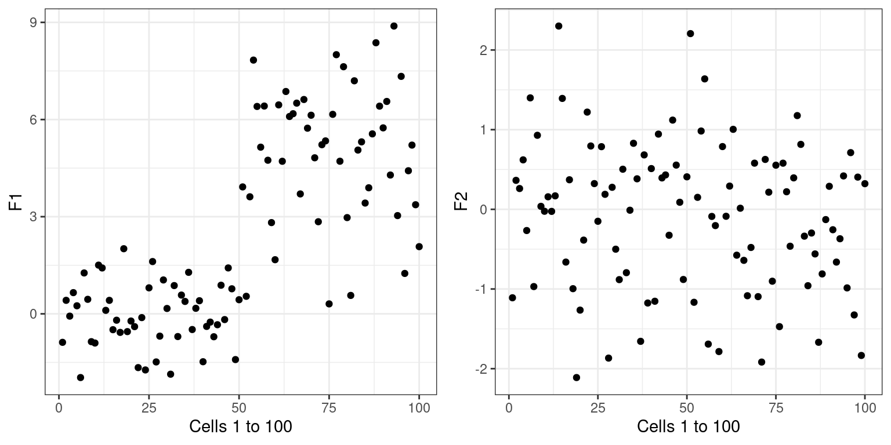
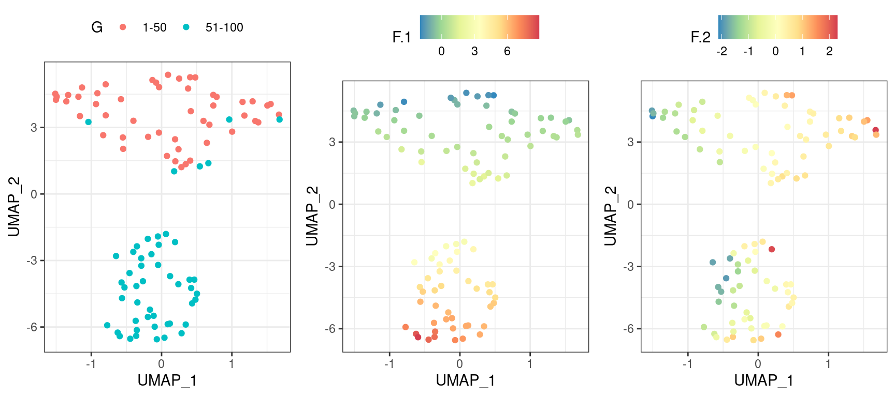
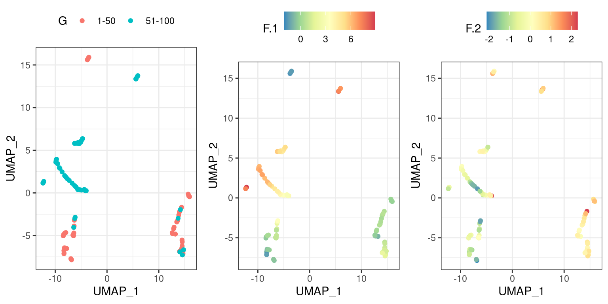
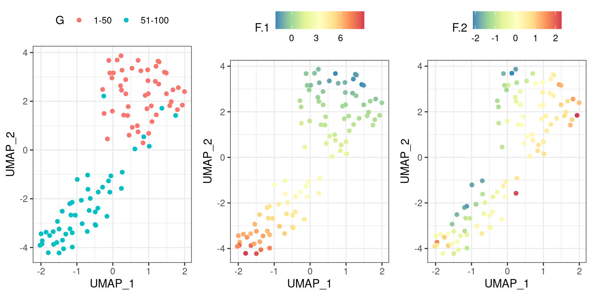
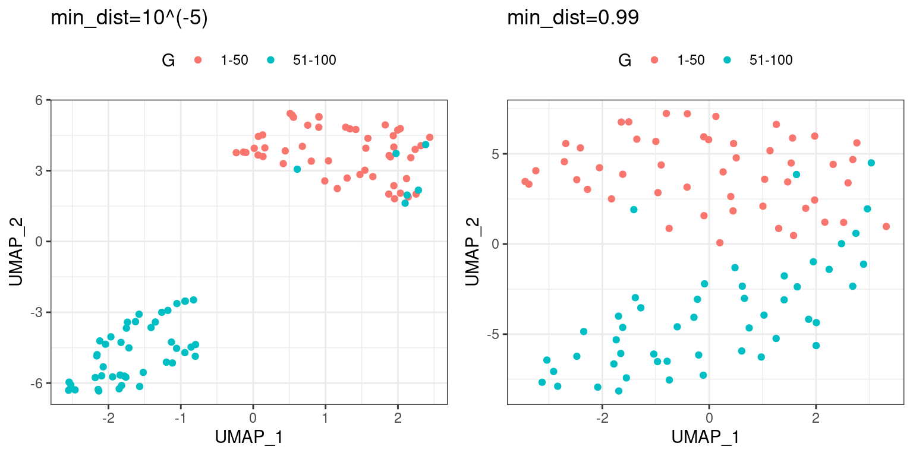
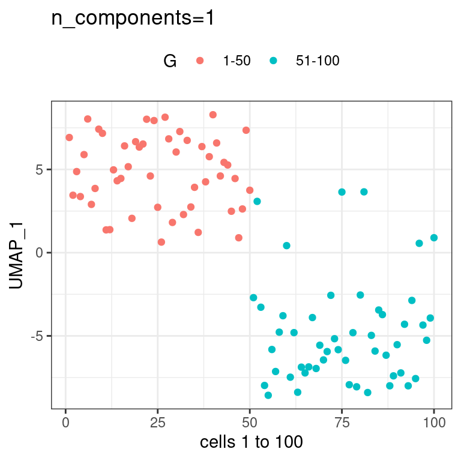

Chapter 2 UMAP
UMAP is an algorithm for non-linear dimension reduction. UMAP learns the manifold structure of the input data, and finds a low dimensional embedding that preserves the topological structure of that manifold.
Here we will simulate data and generate 2D UMAP
2.1 Data simulation
\(N\)=100 cells
\(F\)=2 features (F1 and F2)
Gene expression matrix \(Y^{N \times F}\)
- \(Y^{[1:50, F1]} \sim N(0, 1)\)
- \(Y^{[51:100, F1]} \sim N(5, 2)\)
- \(Y^{[1:100, F2]} \sim N(0, 1)\)
2.1.1 F1 and F2 distribution


2.2 UMAP parameters
UMAP has a lot of parameters. See full list below.
FALSE n_neighbors n_components metric
FALSE "15" "2" "euclidean"
FALSE n_epochs input init
FALSE "200" "data" "spectral"
FALSE min_dist set_op_mix_ratio local_connectivity
FALSE "0.1" "1" "1"
FALSE bandwidth alpha gamma
FALSE "1" "1" "1"
FALSE negative_sample_rate a b
FALSE "5" NA NA
FALSE spread random_state transform_state
FALSE "1" NA NA
FALSE knn knn_repeats verbose
FALSE NA "1" "FALSE"
FALSE umap_learn_args
FALSE NA2.2.1 n_neighbors (default n_neighbors: 15)
n_neighbors controls the resolution at which UMAP learns the manifold structure of the data.
If n_neighbors is set to a too low value, UMAP will zoom into local neighborhood when attempting to learn the manifold structure of the data. The opposite will happen if n_neighbors is set to a too high value.
Lets set n_neighbors=3 and look at the resulting UMAP. As expected, we see that UMAP focuses on learning from local structure and misses the global structure. As a result we get stringy UMAP layout.

The opposite should happen for e.g. n_neighbors=100, the overal (global) structure should be captured better but at the loss of some of the finer local structure compared to the initial example where we set n_neighbors=15. As there are only 100 cells in our data, n_neighbors=15 was already high enough and we do not see that much of difference in the newly built UMAP.

2.2.2 min_dist (default min_dist: 0.1)
min_dist determines the compactness/clumpiness of the data points as it provides the minimum possible distance that may exist between any two points.
Below two panels show UMAPs with min_dist=\(10^{-5}\) (left panel) and min_dist=0.99 (right panel)

2.2.3 n_components (default n_components: 2)
As in other dimension reduction algorithms, UMAP can perform dimension reduction to a specific number of dimensions. This is regulated by the parameter n_components.

2.2.4 metric (default metric=‘Euclidean’)
This parameters determines how distances are computed between the cells. Many different metrics are available